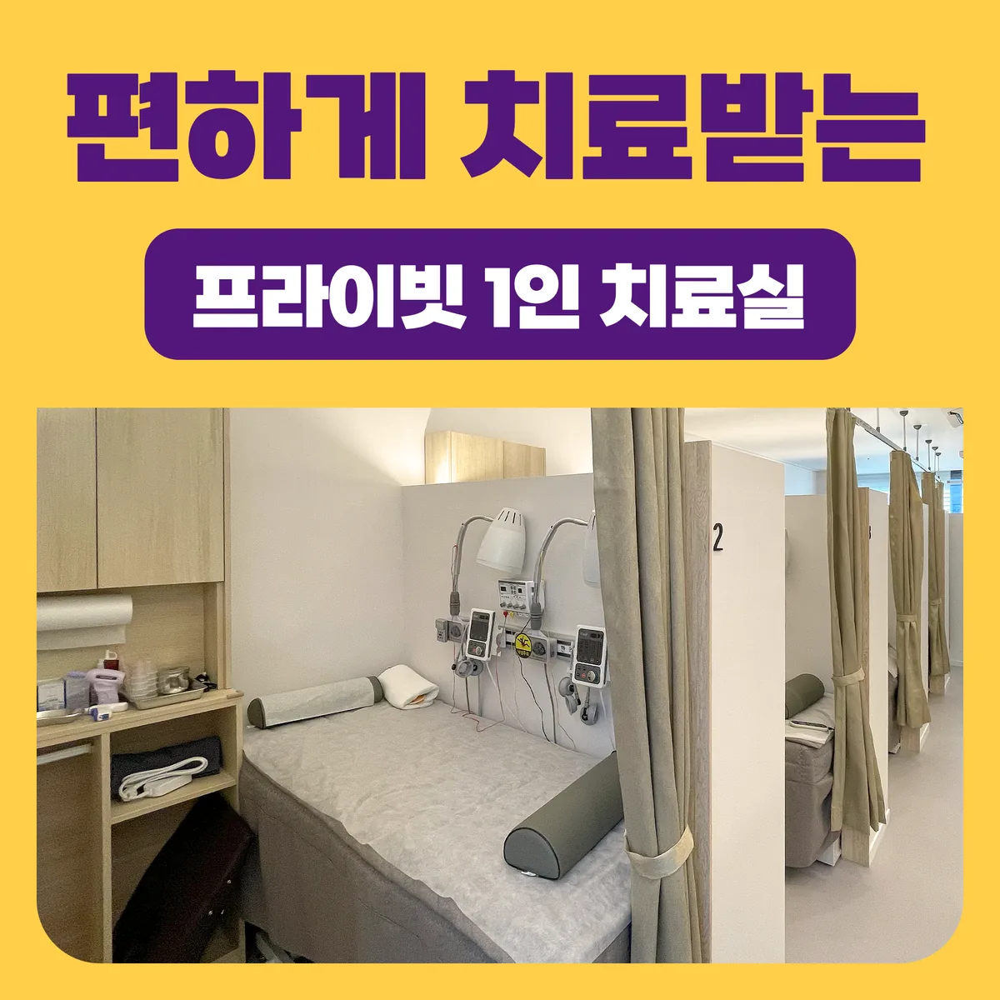

사고 충격으로 생긴 목·허리의 근육·인대 손상과 어혈은 엑스레이에 나타나지 않는 경우가 많습니다. 통증진단학회 정회원 원장이 손상 부위와 범위를 확인하고, 급성기·회복기에 따라 치료 방법과 강도를 조정합니다.
교통사고 후유증은 사고 당시보다 며칠 뒤에 통증이 나타나는 경우가 많습니다. 연결한의원 청주오창은 보험 접수 확인부터 통합 진단, 침·약침·뜸·한약·추나까지 사고 후유증을 체계적으로 관리합니다. 자동차보험 적용으로 본인부담금 없이 진료받으실 수 있습니다. 사고 후 목·허리·어깨가 뻐근하고 뻣뻣한 분이라면 현재 상태와 기존 검사 결과를 확인한 뒤 적용 가능 여부를 상담할 수 있습니다.
교통사고 · 자동차보험 한방진료, 어떤 분께 필요할까요?
- 사고 후 목·허리·어깨가 뻐근하고 뻣뻣한 분
- 사고 며칠 뒤부터 두통·어지럼·메스꺼움이 생긴 분
- 엑스레이·CT에서 이상이 없다는데 통증이 계속되는 분
- 밤에 잠을 설치고 사고 장면이 떠오르며 불안한 분
- 합의 전 충분히 치료를 받고 싶은 분
교통사고 · 자동차보험 한방진료, 어떻게 진행되나요?
보험 접수 확인
보험사 접수번호를 알려주시면 본인부담금 없이 진료가 진행됩니다.
통합 진단
손상 부위와 범위, 두통·어지럼 등 동반 증상을 확인하고 필요한 검사 여부를 판단합니다.
단계별 치료
급성기에는 침·약침·부항으로 통증과 부종을, 회복기에는 추나·한약으로 기능 회복을 돕습니다.
경과 관리
치료 반응을 확인해 계획을 조정하고 일상 복귀 시점을 함께 정합니다.
자동차보험 한방진료는 침·약침·부항·뜸·추나·한약(첩약) 등이 보험 적용되며, 본인부담금이 없습니다.
의식 변화, 마비, 심한 두통, 흉통, 호흡곤란처럼 급하거나 위험한 신호가 있으면 응급실 평가가 먼저입니다.
원내 안내 포스터

교통사고 · 자동차보험 한방진료, 무엇이 궁금하신가요?
교통사고 후 한의원 진료도 자동차보험이 되나요?
네, 자동차보험으로 침·약침·부항·추나·한약 등 한방진료를 본인부담금 없이 받으실 수 있습니다. 접수 시 보험사 접수번호를 알려주시면 됩니다.
사고 후 언제까지 치료받을 수 있나요?
합의 전까지 치료가 가능하며, 증상의 정도에 따라 치료 기간이 달라집니다. 급하게 합의하기보다 통증과 기능 회복 상태를 확인한 뒤 결정하시기를 권합니다.
다른 병원과 함께 다녀도 되나요?
정형외과 등 다른 의료기관과 병행 진료가 가능합니다. 다만 같은 날 같은 항목의 중복 치료는 제한될 수 있으니 진료 시 알려주시면 조율해 드립니다.
관련 질환 정보
지점 안내
연결한의원 청주오창
충북 청주시 청원구 오창읍 2산단로 132, 301·302호 (3층)
대표전화 043-715-3688 · 네이버지도 길찾기 →
연결한의원은 증상만 보지 않습니다.
증상 뒤에 숨은 원인을, 오늘의 몸과 회복된 내일을 잇는 것 — 저희가 ‘연결’이라는 이름을 쓰는 이유입니다.
교통사고 · 자동차보험 한방진료로 고민이시라면, 혼자 판단하기보다 정확한 진단부터 함께 시작해 보세요.